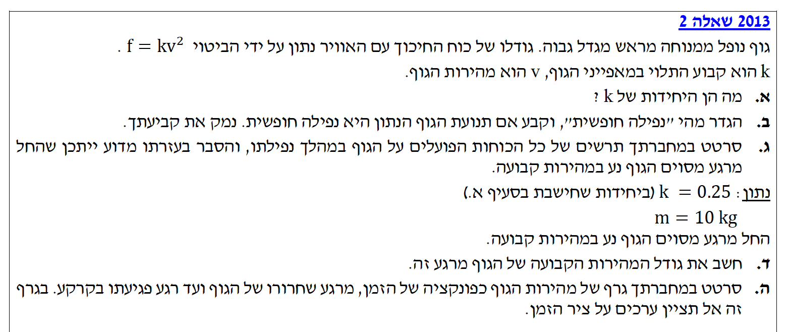
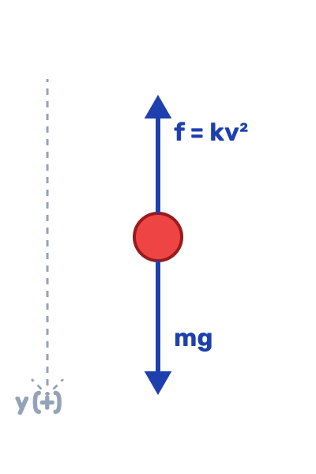
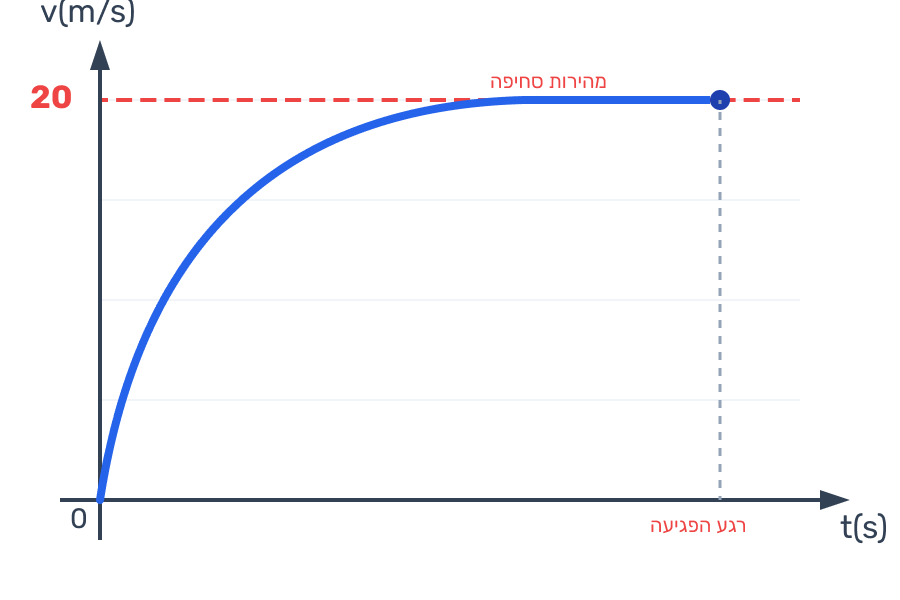

פתרון מלא צעד-אחר-צעד עם דגשים פדגוגיים

גודלו של כוח החיכוך עם האוויר נתון על ידי הביטוי התלוי במהירות הגוף: \( f = kv^2 \).
אנו נדרשים למצוא מהן יחידות המידה (במערכת MKS) של הקבוע \( k \).
כדי למצוא את יחידות המידה של \( k \), נחלץ אותו מתוך משוואת הכוח הנתונה:
\[ k = \frac{f}{v^2} \]כעת, נציב את יחידות המידה של כל גודל מוכר. יחידת המידה של כוח (\( f \)) היא ניוטון (N). על פי החוק השני של ניוטון, ניוטון אחד מוגדר כ- \( 1 \text{ N} = 1 \text{ kg} \cdot \frac{\text{m}}{\text{s}^2} \). יחידת המידה של מהירות (\( v \)) היא מטר לשנייה (\( \frac{\text{m}}{\text{s}} \)), ולכן יחידת המידה של מהירות בריבוע היא \( \frac{\text{m}^2}{\text{s}^2} \).
נציב את היחידות לביטוי שחילצנו:
\[ [k] = \frac{[f]}{[v^2]} = \frac{\text{kg} \cdot \frac{\text{m}}{\text{s}^2}}{\frac{\text{m}^2}{\text{s}^2}} \]נצמצם את השנייה בריבוע (\( \text{s}^2 \)) מהמונה ומהמכנה, ונצמצם מטר אחד (\( \text{m} \)):
\[ [k] = \frac{\text{kg} \cdot \text{m}}{\text{m}^2} = \frac{\text{kg}}{\text{m}} \]טיפ מורה: אנליזת יחידות (ממדים) היא כלי קריטי בפיזיקה! כשתבקשו למצוא יחידות של קבוע כלשהו, הדרך הטובה ביותר היא "לפרק" את כל הגדלים ליחידות הבסיסיות של מערכת MKS (קילוגרם, מטר, שנייה) ולבצע את פעולות החשבון הרגילות עליהן. זה גם עוזר לבדוק אם הנוסחה שיצרתם בהמשך הגיונית!
הגוף נופל באוויר, וידוע כי פועל עליו כוח חיכוך עם האוויר המבוטא כ- \( f = kv^2 \).
להגדיר מילולית מהי "נפילה חופשית", ולקבוע בהתבסס על הגדרה זו האם תנועת הגוף הנתון נחשבת כנפילה חופשית (תוך מתן נימוק).
בסעיף זה אין צורך בנוסחאות חישוב, אלא בהבנה תאורטית של הגדרות הפיזיקה הקלאסית.
הגדרה: "נפילה חופשית" מוגדרת כמצב בו תנועתו של גוף מושפעת אך ורק מכוח הכובד (גרביטציה) המופעל עליו על ידי כדור הארץ (או גרם שמיים אחר), ללא מעורבות של שום כוח אחר כגון התנגדות אוויר, כוחות עילוי, מתיחות וכו'.
קביעה ונימוק: תנועת הגוף הנתון איננה נפילה חופשית. על פי נתוני השאלה, פועל על הגוף בזמן תנועתו כלפי מטה כוח נוסף מלבד כוח הכובד – הוא כוח החיכוך עם האוויר המתואר על ידי \( f = kv^2 \). הימצאותו של כוח החיכוך סותרת את הגדרת הנפילה החופשית.
טיפ מורה: זכרו את משמעות המילה "חופשית" בהקשר הזה – הגוף חופשי מכל השפעה *חיצונית אחרת* שאינה שדה הכבידה עצמו. אפילו אם כוח החיכוך קטן מאוד ברגע הראשון, נוכחותו הופכת את התנועה לכזו שאיננה מוגדרת פיזיקלית כ"נפילה חופשית".
הגוף נופל כלפי מטה. מהירותו מתחילה מאפס והולכת וגדלה עם הזמן. כוח הכובד \( mg \) פועל כלפי מטה וכוח החיכוך עם האוויר \( f=kv^2 \) פועל בניגוד לכיוון התנועה (כלפי מעלה).
לסרטט תרשים כוחות הפועלים על הגוף (FBD) ולהסביר באמצעותו כיצד ייתכן תאורטית שמצב התנועה הופך לתנועה במהירות קבועה.
תחילה נשרטט את תרשים הכוחות החופשי (FBD) עבור הגוף הנופל:

תרשים 1: כוחות על הגוף במעופו. כיוון הציר החיובי נבחר כלפי מטה.
הסבר להגעה למהירות קבועה:
נרשום את משוואת החוק השני של ניוטון בציר האנכי, כאשר בחרנו את כיוון מטה ככיוון החיובי:
\[ \Sigma F_y = mg - f = ma \] \[ mg - kv^2 = ma \]ברגע השחרור (ממנוחה), המהירות היא \( v=0 \). לכן, כוח החיכוך הוא אפס (\( f=0 \)) והתאוצה היא מקסימלית ושווה לתאוצת הכובד \( g \). ככל שהגוף נופל, גודל מהירותו \( v \) הולך וגדל. מכיוון שכוח החיכוך מבוסס על המהירות (\( f=kv^2 \)), גם כוח החיכוך הפועל כלפי מעלה הולך וגדל ככל שהזמן עובר.
עם גדילת כוח החיכוך, השקול של הכוחות הפועלים על הגוף (\( mg - f \)) הולך וקטן. כתוצאה מכך, על פי החוק השני של ניוטון, תאוצת הגוף \( a \) הולכת וקטנה.
בשלב מסוים, גודל המהירות גדל עד לנקודה שבה כוח החיכוך המשוך כלפי מעלה שווה במדויק לכוח הכובד המושך כלפי מטה, כלומר \( kv^2 = mg \). ברגע זה, שקול הכוחות מתאפס (\( \Sigma F = 0 \)). לפי החוק הראשון של ניוטון, כיוון ששקול הכוחות הוא אפס, הגוף יתמיד במצב תנועתו. התאוצה מתאפסת, והגוף ימשיך ליפול בקו ישר ובמהירות קבועה מעתה ועד פגיעתו בקרקע.
טיפ מורה: מילים חשובות כאן הן "שקול כוחות" ו"תאוצה קטנה". שימו לב – הגוף לא מאיט! המהירות שלו ממשיכה לגדול, אבל *קצב הגידול* (התאוצה) הוא זה שקטן, עד שהוא מגיע לאפס. ברגע שהתאוצה אפס, המהירות מפסיקה לגדול ונשארת על ערכה המרבי שנקרא "מהירות מסופית" (Terminal Velocity).
ערכו של קבוע החיכוך הוא \( k = 0.25 \text{ kg/m} \).
מסת הגוף היא \( m = 10 \text{ kg} \).
תאוצת הכובד לפי הכלל קבועה בערך של \( g = 10 \text{ m/s}^2 \).
אנו נמצאים ב"רגע המסוים" – השלב בו תנועת הגוף נעשית במהירות קבועה (ולכן התאוצה היא \( a = 0 \)).
לחשב את גודלה המספרי של אותה מהירות קבועה.
על סמך ההסבר המפורט בסעיף הקודם, כאשר המהירות קבועה מתקיים שהתאוצה אפס, ולכן שקול הכוחות אפס:
\[ \Sigma F = mg - f = m \cdot 0 \] \[ mg - kv^2 = 0 \]נבודד את המהירות הקבועה \( v \):
\[ kv^2 = mg \] \[ v^2 = \frac{mg}{k} \] \[ v = \sqrt{\frac{mg}{k}} \]כעת נציב את הנתונים המספריים מתוך שלב "מה נתון":
\[ v = \sqrt{\frac{10 \cdot 10}{0.25}} = \sqrt{\frac{100}{0.25}} \]נזכור שחלוקה ברבע שקולה להכפלה ב-4:
\[ v = \sqrt{400} = 20 \text{ m/s} \]טיפ מורה: תמיד ודאו שהצבתם יחידות MKS לפני החישוב. כאן המסה ניתנה כבר בק"ג, אבל אם הייתה בגרמים היה עליכם להמירה! בנוסף, זכרו שתאוצת הכובד לצורך פתרון בחינות הבגרות היא תמיד בקירוב \( 10 \text{ m/s}^2 \).
מכלל הסעיפים הקודמים הסקנו כי: הגוף מתחיל ממהירות תחילית של \( v=0 \) ברגע השחרור (\( t=0 \)). מהירותו גדלה בקצב (תאוצה) הולך וקטן, עד שגודל המהירות מתייצב באופן קבוע על הערך \( 20 \text{ m/s} \). התאוצה ההתחלתית היא המקסימלית ושווה ל- \( g \).
לסרטט גרף איכותי המתאר את מהירות הגוף כפונקציה של הזמן מנקודת השחרור ועד לפגיעה בקרקע. נדרש לציין ערכים על ציר המהירות אך לא על ציר הזמן.
ייצוג גרפי בהתבסס על ניתוח פונקציונלי של חוקי ניוטון.
בגרף מהירות-זמן (\( v(t) \)), השיפוע בכל נקודה מייצג את התאוצה של הגוף. כפי שהסברנו, התאוצה מתחילה משיא ערכה (גודל \( g \)) וקטנה בהדרגה עד שהיא מתאפסת. לכן אנו נצפה לראות גרף המתחיל בשיפוע חיובי תלול, אך השיפוע הולך ומתמתן (עקומה קעורה כלפי מטה) עד שהגרף משיק לקו אופקי שמייצג את המהירות המרבית הקבועה (\( 20 \text{ m/s} \)).

תרשים 2: מהירות הגוף כפונקציה של הזמן
טיפ מורה: בגרפים איכותיים בבגרות, חשוב מאוד להקפיד על צורת העקומה! אל תציירו קו ישר כי התאוצה אינה קבועה. שימו לב שהעקומה חלקה, מתחילה מנקודת האפס בשיפוע משמעותי, ומתעגלת לאיטה עד לקו האופקי המקווקו שמראה את גבול המהירות מבלי לחצות אותו.